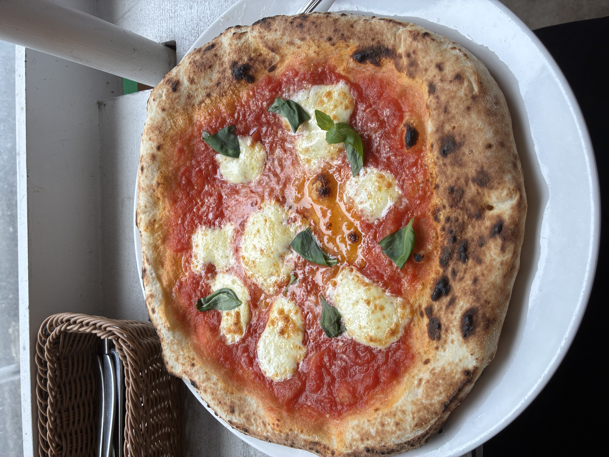
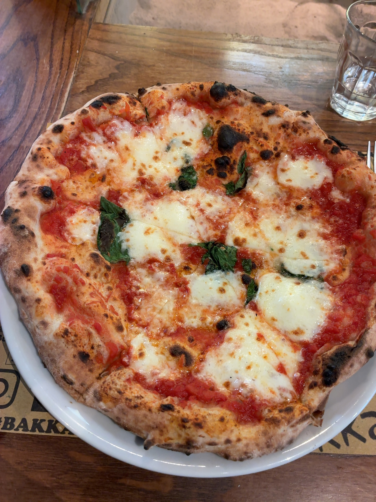
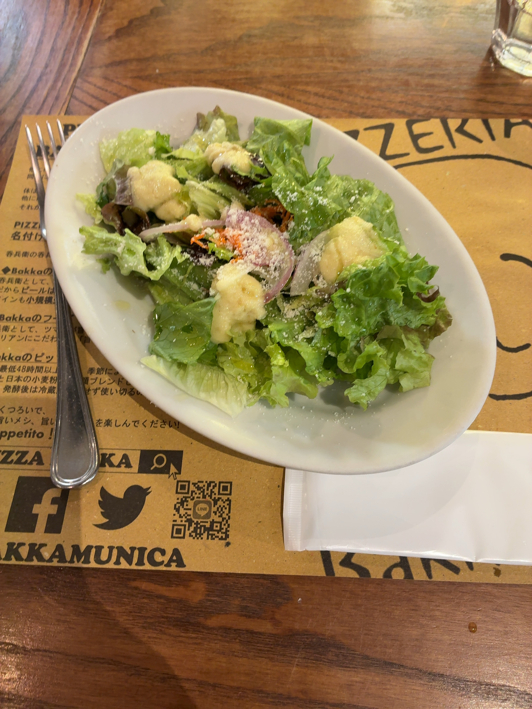

26/9/3（投稿日）YOSHIO＠yoshio
薪窯。サラダにドレッシングドボドボだったから？生地に塩味を感じない。モッツァレラも若干食感あるけど味がしない、ミルキー感もない。生地もパリッと感がなく、これがもちもち系ということか、、コルニチョーネもモサっとはしてないけど、、俺はやっぱりパリッと系が好みだなと実感 とにかく生地とモッツァレラが無味で、トマトの酸味だけの印象。コーヒーもめちゃ薄い サラダと一緒に出されるからぬるめだし 批判ばかりで申し訳ない。
■ランチセット マルゲリータ
⇒★★ 2.0
■PIZZA K（新御茶ノ水店）
■東京都千代田区
■1100円
■Ate day：26/4/28

（自分が撮った写真）
26/9/3（投稿日）YOSHIO＠yoshio
大きめな薪窯。マルゲリータ注文。15分程で提供。28cm大あり、コルニチョーネや表面や裏面のこげ加減も良好。モッツァレラが酸味があり歯応え抜群、バジルも香り高くめっちゃ美味かった。生地もほぼ塩味ないが、程よいこげと相まって耳まで 美味しい。4種の小麦粉をブレンドして 48時間以上の発酵とのこと。研究すべし。これ作れれば売れる。
■マルゲリータ ランチセット（×そのまま味わうべし）
⇒★★★★⋆ 4.5
■ピッツェリア バッカムニカ
■東京都品川区東大井
■1330円
■Ate day：26/4/17


（自分が撮った写真）
26/1/30（投稿日）YOSHIO＠yoshio
NYスタイルの切り分けピザ。大型のガスオーブンで本場感あり。焼成は約350℃。手のひらより大きい1/8が2枚でボリュームは満足、
味も悪くはないが、ぼんやりした味のチーズが重く、全体的にファーストフード寄り。トマトのフレッシュさやパリッと感・
ジューシーさは弱く、モサつく印象。出来立てじゃない前提のNYピザ特性もあるかも。ナポリピッツァ派だと再確認。
■チーズピザ、ハラペーニョピザ、コーラ
⇒★★★ 3.0
■maple pizza
■東京都台東区
■総額1600円
■Ate day：26/1/23